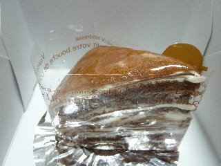
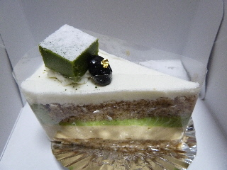
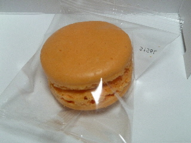
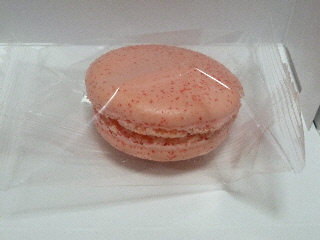
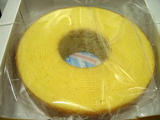

リンツのチョコクレープ。
2011/10/09
出雲市大津朝倉のケーキ屋さんリンツのケーキです。

チョコクレープです。
クレープ生地だけじゃなくて、スポンジとバナナが挟んでありました。
その分クリームがすくなめで、甘さが軽かったです。

ほうじ茶のケーキです。
お茶系なので、後味がサッパリスッキリでした。
茶色いムース部分が、ほうじ茶の味がよくして美味しかったです。
私はここのお店のケーキは甘いってイメージを持っていたんですけど、今回食べたのは両方とも軽めだったので、イメージが少し変わりました。
リンツの塩キャラメルマカロン。
2011/03/14
オレンジ色がきれいなマカロンでした。

マカロンの中はキャラメルです。あまーいキャラメルがしっかりと入っていました。
かなりの甘さだったので、ちょっと飲み物が欲しくなりました。インパクトがありました。
面白いので、ちょっとお勧めです。

赤い斑点模様がある苺マカロンです。こっちはそんなに甘くなく、食べやすかったです。
リンツのバームクーヘン。
2009/01/03
見た目定番っぽいカチッとしたバームクーヘンですね。

でもバームクーヘンの外周には砂糖が沢山付いてて、甘くて、ちょっとしっとりとしてました。
内側はドライで、定番的なバームクーヘンでした。外と内で味が違ってて面白いですね、ちょっと飽きにくくて良かったです。
リンツの苺ショート。
2007/01/25
イチゴのショートケーキってなんか普通過ぎてなかなかチョイスしないんですが、たまに食べてみるといいもんですね。
クリームが大目のイチゴショートで、昔からあるクリスマスケーキの感じがしました。
子供のころはこんな感じのケーキが好きだったんだろうなーって思いながら食べました。なつかしい味でした。
Linzのモンブランとカボチャのケーキ。
2005/11/06
リンツのケーキを食べました。今回は秋らしくモンブランとカボチャのケーキです。
モンブランは、栗のクリームの下にカスタードクリームのようなものが入っているんですが、これがとってもミルキーでした。このミルキーなクリームの味がしっかりと主張しているため、全体的に甘～い練乳な印象が強く残りました。
なかなか練乳味のモンブランってないですよね。ちょっとビックリです。よそにはないオリジナルな感じでいいんじゃないでしょうか。気になった方は挑戦してみて下さい。
カボチャの方も、ムースのところがミルキーな感じでした。ミルキーで味がマイルドになってるため、ちょっとスイートポテトっぽい味になってました。
今回は両方とも「ミルク」味が強くて、しっかり甘い商品でした。
リンツさんは今、ミルクが流行ってるんでしょうか？
ここのケーキはちょっと独特なものが多い気がします。
リンツのニューヨークチーズと焼きチーズケーキ。
2005/05/24
大津朝倉のリンツのケーキをまた食べました。別にここのケーキが好きとかいうんじゃなくて、新しいお店なので味見な感じです。
見た目、白くてふわっとした感じのニューヨークチーズケーキとしっとりとした感じの焼きチーズケーキだったんですが、食べてみるとちょっと違ってて、わりとハードな食感でびっくりしました。う～ん?私の目はまだまだ修行がたらないですね。
リンツのケーキ。
2005/05/15
今日お店の前を通ったらオープンしてたので早速食べてみました。
出雲市大津朝倉に新しくケーキ屋さんが出来るって事で、新聞の広告を楽しみにしてたんですけど、発見できませんでした。オープンのチラシはなかったのかな?
ケーキの感想は、今回2種類いただいたんですけど、両方とも甘くて大きさがオオブリでした。
出来たばかりのお店なので、しばらく間を置いてからまた行こうと思います。